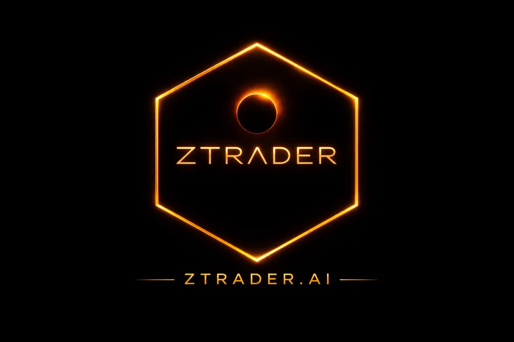
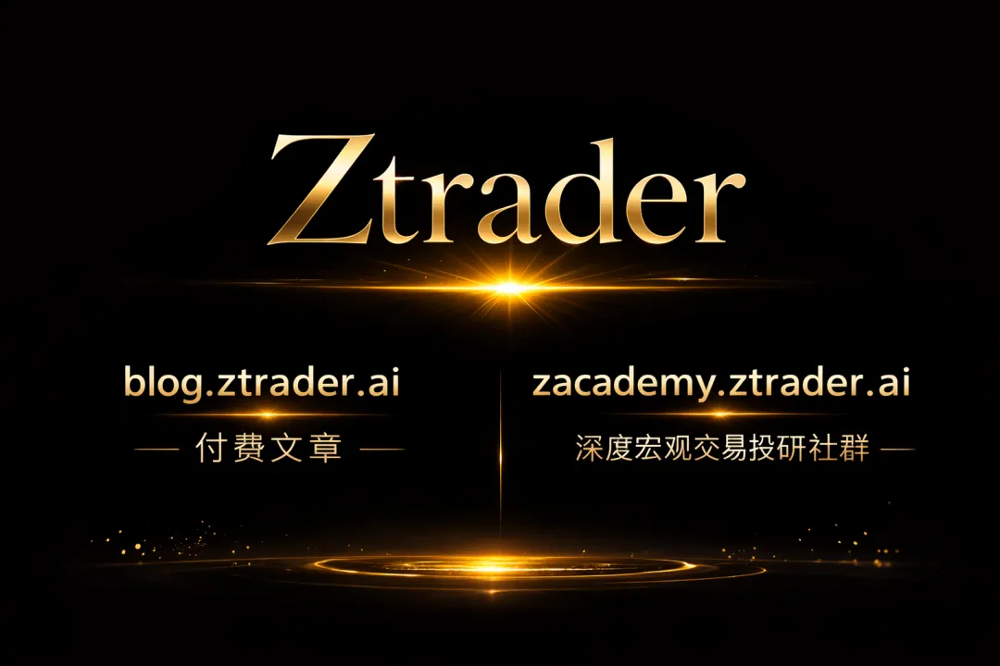

前文：
普通交易者如何用AI建立自己的宏观框架02 ： 建立底层工作流
我是如何一个人建出一个「迷你彭博终端」的（以及这一年我和服务器、矿毒、Auth系统的战争）
本公众号随时可能被删被和谐，请后台私信邮箱防失联。
每天养成打开文章，一起和我速推爆产能！
学习AI加入超级产能社群请在后台私信社群，1299/年，白褥勿扰。
搜索星球号：23835731
星球名称：AI量化研究
本号为国际平台，同时在medium/substack等皆有更新，关注读者为国际社群，现主要付费入口为substack 和会员网站入口。
请转发，点赞以及在看，你们的支持是我更新的动力。无赞者必拉黑，要API者必拉黑。
2000阅读/1000赞自动解锁下一篇内容，没阅读没赞不更新，拒绝白嫖，从我做起

——从认知结构到策略系统（Options Strategy System）
一、为什么大多数人“懂框架但不会交易”
上一章我们谈到了：
Direction / Vol / Time
听起来很厉害，但问题来了：
你还是不知道该做什么单。
因为你缺的不是理解，而是：
映射能力（Mapping）
也就是：
市场状态 → 对应策略
机构不是“想做什么策略就做什么”，
而是：
市场结构决定策略选择
二、策略不是选择，是“被逼出来的”
普通交易者：
想做 Iron Condor
想卖 Put
想做 Calendar
专业交易者：
市场结构是什么？
波动率在哪个区间？
时间窗口是什么？
然后：
策略自动出现
三、期权策略的底层分类（你必须建立的核心地图）
所有策略，本质只有三类：
1）Directional（方向型）
Long Call / Long Put
Call Spread / Put Spread
核心暴露：
赌方向
赌时间窗口
适合：
趋势明确
IV 不极端
2）Volatility（波动率型）
Straddle
Strangle
核心暴露：
赌波动
不赌方向
适合：
大事件前
不确定性极高
3）Income / Short Vol（收租型）
Short Strangle
Iron Condor
Short Put
核心暴露：
卖时间
卖波动
适合：
横盘
IV 偏高
记住一句话：
所有复杂策略，都是这三种的变种。
四、AI真正的用法：不是问策略，是做“结构匹配”
不要问：
现在适合做什么策略？
问：
当前市场属于哪种结构？
哪类策略暴露最合理？
示例 Prompt
当前市场处于震荡，IV 位于历史 80% 分位，未来 2 周无重大事件。
请分析：
1）最合理的期权策略类型
2）该策略的风险来源
3）该策略最容易失败的场景AI会给你：
Short vol 结构
收时间价值
风险是突破
你得到的是：
结构判断
五、策略系统核心：五层映射（必须记住）
你真正要建立的是：
Options Strategy Engine
Market Regime
→ Volatility Level
→ Event / Catalyst
→ Time Horizon
→ Strategy Selection举个完整例子
市场：
横盘
IV 高
无事件
期限：2周
推导：
Range
→ High IV
→ No Event
→ Short-term
→ Short Strangle / Iron Condor你不是“选择策略”。
你是在：
推导策略
六、AI策略拆解（最关键能力）
任何策略，都必须拆成这5个维度：
标准分析模板（直接用）
请分析该期权策略：
1）Direction exposure（方向暴露）
2）Volatility exposure（波动暴露）
3）Time decay（时间影响）
4）Max risk（最大风险）
5）Failure condition（失效条件）示例：Short Strangle
AI会告诉你：
不赌方向
卖波动
时间有利
最大亏损：突破
失效：趋势行情
这一步非常关键：
你开始看穿策略本质
七、事件交易（90%人会死在这里）
普通人：
CPI来了买 straddle
然后：
IV crush → 亏钱
专业做法：
先问 AI，
事件后 IV 通常如何变化？
历史上该事件后的 realized vol vs implied vol？你会发现：
市场已经提前定价
正确问题是：
市场有没有“错定价波动”？
八、AI策略生成（进阶）
你可以让 AI 直接生成策略：
给定条件：
- 市场震荡
- IV 高
- 时间 2 周
请给出：
1）策略结构
2）执行方式（strike / expiry）
3）风险控制方法你得到的是：
一个完整策略草稿
然后你做的不是照做，而是：
验证它
九、期权交易口诀（Cheatsheet）
记住这些，比学100个策略有用。
核心口诀 01
高波动卖，低波动买
核心口诀 02
时间是卖方的朋友，是买方的敌人
核心口诀 03
不动最容易亏 Long Premium
核心口诀 04
方向对 ≠ 一定赚钱
核心口诀 05
IV 比价格更重要
核心口诀 06
赚的是结构，不是行情
十、交易前 Checklist（必须执行）
每一单之前，强制问自己：
Strategy Checklist
我赌方向还是波动？
IV 在高位还是低位？
时间对我有利吗？
最坏情况是什么？
什么时候认错？
如果你答不出来：
不要下单
十一、每日训练方式（可执行）
每天 30 分钟：
1）选一个标的（SPX / TSLA）
2）看 IV
3）问 AI：
当前市场结构属于哪类？
4）生成策略
5）写下：
为什么做
什么时候错
坚持 30 天，
你会明显感觉：
思维变了
本质总结
普通交易者：
学策略
专业交易者：
建系统
AI的意义不是：
帮你赚钱
而是：
帮你减少愚蠢决策
如果没有系统：
期权 = 放大亏损
如果有系统：
期权 = 风险工具
下一篇预告
03 会进入真正危险但也最有价值的部分：
IV 结构（term structure / skew）
gamma positioning
dealer flow
为什么市场“看起来错，但其实没错”
因为真正赚钱的地方在这里：
你看到的不是价格，而是结构错位
你现在已经不是在学期权了。
你是在学：
如何解构市场的不确定性。